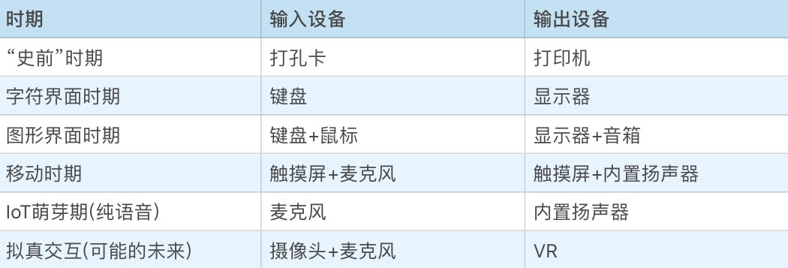

- 00 开篇词 怎样成长为优秀的软件架构师？.md
- 01 架构设计的宏观视角.md
- 02 大厦基石：无生有，有生万物.md
- 03 汇编：编程语言的诞生.md
- 04 编程语言的进化.md
- 05 思考题解读：如何实现可自我迭代的计算机？.md
- 06 操作系统进场.md
- 07 软件运行机制及内存管理.md
- 08 操作系统内核与编程接口.md
- 09 外存管理与文件系统.md
- 10 输入和输出设备：交互的演进.md
- 11 多任务：进程、线程与协程.md
- 12 进程内协同：同步、互斥与通讯.md
- 13 进程间的同步互斥、资源共享与通讯.md
- 14 IP 网络：连接世界的桥梁.md
- 15 可编程的互联网世界.md
- 16 安全管理：数字世界的守护.md
- 17 架构：需求分析 (上).md
- 18 架构：需求分析 (下) · 实战案例.md
- 19 基础平台篇：回顾与总结.md
- 20 桌面开发的宏观视角.md
- 21 图形界面程序的框架.md
- 22 桌面程序的架构建议.md
- 23 Web开发：浏览器、小程序与PWA.md
- 24 跨平台与 Web 开发的建议.md
- 25 桌面开发的未来.md
- 26 实战（一）：怎么设计一个“画图”程序？.md
- 27 实战（二）：怎么设计一个“画图”程序？.md
- 28 实战（三）：怎么设计一个“画图”程序？.md
- 29 实战（四）：怎么设计一个“画图”程序？.md
- 30 实战（五）：怎么设计一个“画图”程序？.md
- 31 辅助界面元素的架构设计.md
- 32 架构：系统的概要设计.md
- 33 桌面开发篇：回顾与总结.md
- 34 服务端开发的宏观视角.md
- 35 流量调度与负载均衡.md
- 36 业务状态与存储中间件.md
- 37 键值存储与数据库.md
- 38 文件系统与对象存储.md
- 39 存储与缓存.md
- 40 服务端的业务架构建议.md
- 41 实战（一）：“画图”程序后端实战.md
- 42 实战（二）：“画图”程序后端实战.md
- 43 实战（三）：“画图”程序后端实战.md
- 44 实战（四）：“画图”程序后端实战.md
- 45 架构：怎么做详细设计？.md
- 46 服务端开发篇：回顾与总结.md
- 47 服务治理的宏观视角.md
- 48 事务与工程：什么是工程师思维？.md
- 49 发布、升级与版本管理.md
- 50 日志、监控与报警.md
- 51 故障域与故障预案.md
- 52 故障排查与根因分析.md
- 53 过载保护与容量规划.md
- 54 业务的可支持性与持续运营.md
- 55 云计算、容器革命与服务端的未来.md
- 56 服务治理篇：回顾与总结.md
- 57 心性：架构师的修炼之道.md
- 58 如何判断架构设计的优劣？.md
- 59 少谈点框架，多谈点业务.md
- 60 架构分解：边界，不断重新审视边界.md
- 61 全局性功能的架构设计.md
- 62 重新认识开闭原则 (OCP).md
- 63 接口设计的准则.md
- 64 不断完善的架构范式.md
- 65 架构范式：文本处理.md
- 66 架构老化与重构.md
- 67 架构思维篇：回顾与总结.md
- 68 软件工程的宏观视角.md
- 69 团队的共识管理.md
- 70 怎么写设计文档？.md
- 71 如何阅读别人的代码？.md
- 72 发布单元与版本管理.md
- 73 软件质量管理：单元测试、持续构建与发布.md
- 74 开源、云服务与外包管理.md
- 75 软件版本迭代的规划.md
- 76 软件工程的未来.md
- 77 软件工程篇：回顾与总结.md
- 加餐 如何做HTTP服务的测试？.md
- 加餐 实战：“画图程序” 的整体架构.md
- 加餐 怎么保障发布的效率与质量？.md
- 热点观察 我看Facebook发币（上）：区块链、比特币与Libra币.md
- 热点观察 我看Facebook发币（下）：深入浅出理解 Libra 币.md
- 用户故事 站在更高的视角看架构.md
- 答疑解惑 想当架构师，我需要成为“全才”吗？.md
- 结束语 放下技术人的身段，用极限思维提升架构能力.md
- 课外阅读 从《孙子兵法》看底层的自然法则.md
10 输入和输出设备：交互的演进
你好，我是七牛云许式伟。
前面我们已经介绍了操作系统的存储管理：内存和外存。今天，让我们来聊一聊操作系统是如何管理输入和输出设备的。
输入和输出设备有非常非常多。例如输入设备除了你常见的键盘、鼠标、触摸屏外，还有一些采集信息的传感器，如GPS位置、脉搏、心电图、温度、湿度等。我们会把关注点收敛在人机交互相关的设备管理上。
交互的演进
在计算机外部设备的演进上，人机交互设备的演进毫无疑问是最为剧烈的部分。
计算机刚出现的时候，人们使用“打孔卡+打印机”作为人机交互方式。这个时期还没有操作系统，表达意图非常痛苦，只能在打孔卡上打孔来发送指令。
但很快，人们找到了 “键盘+显示器”， 这对最为经典的人机交互设备。而随着计算机使用人群越来越多，以及使用场景的变化，人机交互的方式也相应地发生了一次又一次的改变。

总结这些改变，我们会发现，人机交互在往越来越自然的方向发展。所谓自然，就是越来越接近于两个人直接的面对面沟通。
那么，这些人机交互的改变，对于操作系统来说又意味着什么呢？
输入设备
我们先看输入设备：键盘、鼠标、麦克风、摄像头。
键盘
键盘输入的管理机制和窗口系统的设计密切相关。为了让用户清楚键盘输入的目的地，窗口系统往往会有一个焦点窗口。
在窗口系统里面，窗口间还有父子关系，焦点窗口还会有父窗口，还有父窗口的父窗口，这些窗口属于活动窗口。
大部分情况下，键盘输入的事件会先发给焦点窗口，焦点窗口不处理则发给其父窗口，按此传递，直到有人处理了该按键事件，或者直到顶层窗口。
键盘从功能上来说，有两个不同的能力：其一是输入文本，其二是触发命令。 从输入文本的角度来说，要有一个输入光标（在Windows里面叫Caret）来指示输入的目的窗口。目的窗口也必然是焦点窗口，否则就会显得很不自然。
这个交互的呈现方式非常稳定，从 DOS到Windows/Mac，到iOS/Android 都是如此。但是从触发命令的角度来说，命令的响应并不一定是在焦点窗口，甚至不一定在活跃窗口。
比如Windows下就有热键（HotKey）的概念，能够让非活跃窗口（Inactive Window）也获得响应键盘命令的机会。一个常见的例子是截屏软件，往往需要一个热键来触发截屏。
到了移动时代，键盘不再是交互主体，但是，键盘作为输入文本的能力很难被替代（虽然有语音输入法），于是它便自然而然地保留下来。
不过移动设备不太会有人会基于键盘来触发命令，只有常见的热键需求比如截屏、调大或调小音量、拍照等等，被设计为系统功能（对应的，这些功能的热键也被设计为系统按键）保留下来。
鼠标
鼠标输入的管理机制和键盘一样，和窗口系统的设计密切相关。但鼠标因为有位置，确定鼠标事件的目的地相比键盘事件要简单的多，大部分情况下，鼠标事件总是交给鼠标位置所属的窗口来处理，但也会有一些例外的场景，比如拖放。
为了支持拖放，Windows操作系统引入了鼠标捕获（Mouse Capture）的概念，一旦鼠标被某个窗口捕获，哪怕鼠标已经移出该窗口，鼠标事件仍然会继续发往该窗口。
到了移动时代，鼠标已经完全消失（虽然在智能手机之前还是出现过WinCE这样的支持鼠标的移动操作系统），取而代之的是触摸屏。窗口系统也和PC时期完全不同，在屏幕可见范围内只有单个应用程序占满整个屏幕，这让交互的目的地确认不再是个问题。
麦克风
麦克风是一个非常有潜力的下一代输入设备。今天 IoT 领域如汽车、智能音箱都是很好的发展语音交互能力的场景。包括今天大行其道的手机，语音交互也是一个很好的补充。
交互方式不管怎么变化，其核心需要实现的都是这样的两大能力：输入文本和触发命令，这一点是不变的。
语音交互今天仍然还很不成熟，究其原因，语音交互在 IoT 领域还停留在触发命令为主，且哪怕是触发命令这一件事情，也还有重重关卡需要去突破。
在手机软件中，语音输入文本在部分软件中已经有较多应用，但是主要优势还在日常用语和长文本，在个性化场景如“输入人名之类”，较难达到好的结果。
从更本源的角度看，语音交互今天仍然在相对封闭的应用技术场景里面发展为主，而作为操作系统的主体交互手段，其能力必须是开放的。因为操作系统是开放的，场景是开放的。
摄像头
摄像头作为交互设备，除了引入语音，也引入了手势、表情。从表达能力来说，这是最为丰富也是最为自然的一种表达方法。但是技术所限，这种交互方式还只在萌芽阶段。微软的 Kinect 是一个非常经典的案例，它能够让玩家通过语音和手势发指令来玩游戏。
输出设备
输出设备主要负责向用户反馈信息。比如：显示器（显卡）、音箱（声卡）、打印机。输出设备的演化并不大，最主要的输出设备还是以显示器为主。
显示器
显示器虽然经历了 CRT 到液晶屏多代更新，但也只是支持的色彩更多（从黑白到彩色到真彩色），分辨率越来越高。实际上，从操作系统的软件治理角度来看，显示器并没有发生过实质性的变化。
为了让不同软件可以在同一显示器屏幕上呈现，操作系统引入了窗口系统的概念。每个软件有一个或多个窗口（Window，有时候也叫视图，即View）。在 PC 操作系统中，不同窗口还可以层叠（Cascade）或平铺（Tile）。
通过引入窗口，操作系统在逻辑上把显示器屏幕这个有限的设备资源，分配给了多个软件。和 PC 不同的是，移动设备由于屏幕过小，所以操作系统选择了让软件的顶层窗口全屏占据整个屏幕。这让显示器屏幕的管理变得更为简单。
除了窗口系统，显示设备管理的另一大挑战是绘制子系统。窗口里面的内容是什么，呈现成什么样子，完全是软件来决定的，这就意味着软件需要绘制能力。
绘制能力牵涉面非常之广，在操作系统里面，往往有一个独立的子系统（通常叫GDI）与之对应。这里我们简单罗列一下GDI子系统会涉及哪些东西。
- 2D图形相关。 包含 Path(路径)、Brush(画刷)、Pen(画笔) 等概念。
- 3D图形相关。 包含 Model(模型)、Material(材质)、Lighting(光照) 等概念。
- 文本相关。 包含 Font(字体) 等概念。而字体又分点阵字体和 TrueType 字体。TrueType 字体的优势是可以自由缩放。今天我们见到的大部分字体都是 TrueType 字体。
- 图像处理相关。 包含 Bitmap(位图) 对象及常见图像格式的编解码器(Encoder/Decoder)。
窗口系统结合输入设备对应的事件管理系统、绘制(GDI)系统，我们就可以随心所欲地实现各类用户体验非常友好的视窗软件了。
但是，为了进一步简化开发过程，操作系统往往还提供了一些通用的界面元素，通常我们称之为控件(Control)。常见的控件有如下这些：
- 静态文本 (Label)；
- 按钮 (Button)；
- 单选框 (RadioBox)；
- 复选框 (CheckBox)；
- 输入框 (Input，也叫EditBox/EditText)；
- 进度条 (ProgressBar)；
- ……
不同操作系统提供的基础控件大同小异。不过一些处理细节上的差异往往会成为跨平台开发的坑，如果你希望一份代码多平台使用，在这方面就需要谨慎处理。
音箱
相比显示器的管理，音箱的设备管理要简单得多。我们很容易做到多个软件同时操作设备，而有合理的结果。
例如，调整音量我们遵循覆盖原则即可，谁后设置音量就听谁的。而声音的播放则可进行混音处理，多个软件播放的声音同时播放出来，让人听起来像是同时有多个人在说话。
当然，特定情况下要允许某个软件禁止其他软件播放出来的声音，比如接听电话的软件，需要在电话接通的时候屏蔽掉所有其他软件播放的声音。
打印机
打印机的管理方式又很不一样，软件使用打印机的过程基本上是互斥的。一个软件在打印文档的时候，其他的软件只能等待它打印完毕后，才能进行打印。
打印机的使用是以文档为互斥的单位。为了避免软件之间出现长时间的相互等待，操作系统往往在打印机的管理程序中引入很大的打印缓冲。
软件操作打印机的时候，并不是等待打印机真把内容打印出来，而是把文档打印到打印缓冲中就完成打印。这样，在大部分情况下多个软件不需要因为使用打印机而出现相互等待。
结语
后面我们在谈“桌面开发”一章中，还会涉及人机交互的更多细节，这一章侧重点在于领域无关的通用操作系统相关的问题域，相关的内容这里仅做概要性的阐述。
但是，仅通过简单对比所有输入和输出设备的管理方式，我们就可以看出，不同输入和输出设备的管理方法差异非常大，没有太大的共性可言。
尽管对 CPU 而言，所有外部设备有着相同的抽象，但这些设备的业务逻辑却如此不同，并不能统一抽象它们。正是因为有了操作系统这样的基础软件，这些设备业务逻辑的复杂性才从我们的软件开发过程中解放出来。
人机交互演化的核心变化是输入设备的变化。我们看到，输入手段的变化是非常剧烈的，且每一次演变都是颠覆性的变化。
事实上输入意图的理解越来越难了，因为交互在朝着自然（Nature）和智能（Intelligence）的方向发展。 我们不可能让每一个软件都自己去做输入意图的理解（今天的现状是每个软件自己做），在未来，必然将由操作系统来实现智能交互的基础架构。
今天的内容就到这里。你对今天的内容有什么思考与解读，欢迎给我留言，我们一起讨论。如果你觉得有所收获，也欢迎把文章分享给你的朋友。感谢你的收听，我们下期再见。
© 2019 - 2023 Liangliang Lee. Powered by gin and hexo-theme-book.